À la fin de ce module, vous serez capable de mieux comprendre les principaux paramètres qui influencent la conduite des fours d’incinération de déchets dangereux.
Principes généraux de fonctionnement d'un incinérateur à four rotatif :Suivons brièvement le parcours des déchets dangereux depuis les stockages jusqu’à l’extracteur à mâchefers.
Les déchets solides sont introduits à l’aide d’un grappin par la trémie d’alimentation. Ils sont conduite au four par la « goulotte à solides ».La trémie étant proche de la chambre de combustion, elle peut être construite :
La trémie comprend un sas, qui peut être utilisé pour :
Le four rotatif peut être alimenté de plusieurs manières :
Les déchets alimentés passent par différentes étapes de traitement thermique :
La progression des déchets et le mélange à l'intérieur du four sont contrôlés en réglant la vitesse de rotation appropriée du four. Ce réglage doit maintenir la couche de déchets à épaisseur constante. Les objectifs principaux sont :
Les déchets dangereux doivent être complètement brûlés à la fin du processus et ne rester que sous forme de cendres volantes inertes et de mâchefer inerte. Aucune flamme ne doit rester à ce stade, en quittant le four avant l'extracteur de mâchefer.
Les cendres volantes sont acheminées par les fumées à travers la chambre de post-combustion, où elles se déposent soit jusqu'à l'extracteur inférieur, soit continuent vers l'unité de traitement des fumées en fonction de la taille des particules et de l'état des particules (liquide/solide).
Les mâchefers tombent dans le joint du piège extracteur humide où ils sont trempés par de l'eau de 1000°C à environ 80°C
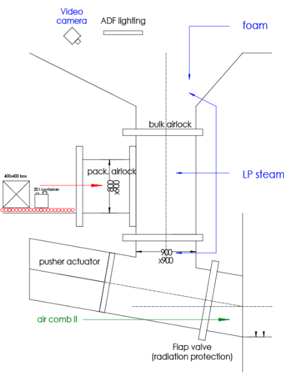
Fig. 1
Trois conditions doivent être remplies pour permettre la combustion :
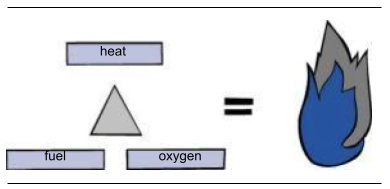
Fig. 2
Rappel de la composition de l'air :
Le triangle du feu est montré ci-contre.
Si l'un de ces trois facteurs n'est pas disponible, aucun feu (combustion) ne démarrera.
Les déchets dangereux sont brûlés comme suit :
Aire de séchage : Les déchets solides ou boues ajoutés à l'entrée du four sont initialement chauffés et perdent une partie de leur teneur en eau sous forme de flux. La rapidité de séchage sera proportionnelle à l'humidité initiale des déchets et à la température d'entrée. La température dans cette zone est contrôlée par l'injection de déchets liquides (pouvoir calorifique haut et bas). La rapidité du séchage est contrôlée grâce à la vitesse de rotation du four. Zone d'allumage : Après un certain temps, une fois l'eau évaporée, des gaz combustibles (monoxyde de carbone, méthane et autres hydrocarbures) sont libérés des déchets secs et s'enflamment à partir de points chauds. Encore une fois, la rotation du four et la flamme du brûleur sont ajustées pour contrôler le démarrage de la combustion. Chambre de combustion : Lorsque la température augmente à nouveau, des braises de carbone à haute température commencent à apparaître. A ce stade, si les déchets qui n'ont pas encore commencé ou à peine commencé à brûler sont introduits trop rapidement, alors que l'alimentation des déchets au début de la chambre de combustion est augmentée, la puissance du four ne sera pas augmentée, mais au contraire , la combustion ralentira.Au bout d'un certain temps, la quantité de braises va augmenter tandis que les gaz combustibles dégagés du cœur des déchets vont commencer à diminuer. Les braises au cœur des flammes ne recevront pas assez d'oxygène pour brûler pleinement. La vitesse de combustion est limitée par l'apport d'oxygène sur les braises (fragmentation du carburant et vitesse du flux d'air).combustion du gaz est terminée dans la chambrepostcombustion, où un brûleur peut fourniroxygène etchaleur si nécessaire .. {0.3cm}
zone finition: déchets peuvent continuer à brûler jusqu'à ce qu'il ne reste imbrûlés dans la dernière partie du four, avant de tomber dans le siphon d'étanchéité et d'évacuation par l'extracteur de mâchefer.Tous les corps sont constitués d'éléments de base et chaque élément est représenté par un symbole (par exemple C pour le carbone, H2 pour l'hydrogène, Fe pour le fer, O2 pour l'oxygène, etc.).
Les flammes sont le résultat d'une réaction chimique exothermique (qui dégage de la chaleur).
Les éléments impliqués dans la réaction sont appelés réactifs. Ceux-ci incluent :
Les résultats de la réaction sont connus sous le nom de produits :
Les réactions chimiques peuvent être écrites en utilisant des équations impliquant les éléments susmentionnés. Les équations peuvent se lire comme suit :
| Available reagents | Chemical reaction | Reaction products |
|---|---|---|
| C + O₂ | → | CO₂ |
| C + ½ O₂ | → | CO |
| H₂ + ½ O₂ | → | H₂O |
Fig. 3
Réaction complète : Le carbone se transforme directement en dioxyde de carbone selon la réaction suivante : center C + O2 -> CO2 centerDe la chaleur sera également dégagée, équivalant à 9,1 kWh par kg de carbone.
Réaction incomplète : Le carbone est d'abord transformé en monoxyde de carbone, puis une partie du monoxyde de carbone est transformée en dioxyde de carbone en fonction des réactions suivantes :center C + 1/2 O2 -> CO center
De la chaleur sera également libérée dans cette réaction, équivalente à 2,6 kWh par kg de carbone. Le CO s'enflamme alors si suffisamment d'oxygène est disponible.
center CO + 1/2 O2 -> CO2 center
De la chaleur sera également libérée dans cette réaction, équivalente à 6,5 kWh par kg de carbone.
Le CO2 est du gaz carbonique. Le
CO, le monoxyde de carbone gazeux, est mortel à des concentrations élevées.
1. Si la quantité minimale d'oxygène ou d'air nécessaire pour réagir avec tout le carbone contenu dans les déchets ménagers est disponible, le processus de combustion est considéré comme neutre ou stoechiométrique.
La stoechiométrie est l'étude des proportions relatives des éléments lorsqu'ils se combinent chimiquement. Ce type de combustion est chimiquement idéal, cependant, il ne se produit jamais complètement dans la pratique.
center
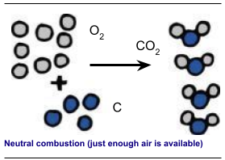
Fig. 4
center
2. Une réaction de combustion avec excès d'air se produit si la quantité d'oxygène disponible dépasse les besoins stoechiométriques en oxygène . Cette réaction est oxydante. Une grande quantité d'oxygène est alors disponible dans les gaz de combustion. Un excès d'air peut également aider à réduire la température de la flamme.
center
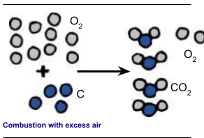
Fig. 5
center
3. Une combustion peut se produire si l'air est insuffisant si la quantité d'oxygène disponible est inférieure à la stoechiométrie besoins en oxygène. Cette réaction est réductrice. Dans ce cas, des imbrûlés et beaucoup de monoxyde de carbone peuvent alors se retrouver dans les fumées. La combustion est incomplète dans ce cas. La variation et l'alternance des conditions de réaction oxydante et réductrice corroderont les tuyaux de la chaudière.
center
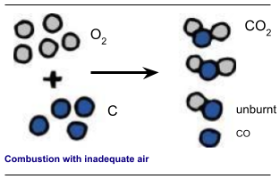
Fig. 6
center
Le pourcentage d'oxygène (O2 % Le pourcentage de monoxyde de carbone (CO) dans la fumée est vérifié pour déterminer si l'air entrant est adéquat. Cette valeur augmentera proportionnellement au manque d'air. Les incinérateurs de déchets dangereux fonctionnent généralement avec un excès d'air conduisant à des niveaux d'oxygène compris entre 4 et 8%
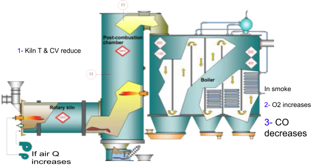
Fig. 7
Si des déchets dangereux sont incinérés dans un four rotatif, la combustion impliquera systématiquement un excès d'air, pour les raisons :
L'excès d'air est donc de l'ordre de 100%
Pour incinérer 1 kg de déchets dangereux au pouvoir calorifique net (PCI) de 3 kW/kg dans des conditions stoechiométriques, il faut 3,5 kg d'air (exemple avec une composition mixte de déchets dangereux susceptible de varier sensiblement), pour brûler 7000 kg (7 tonnes) de déchets dangereux dans les mêmes conditions stoechiométriques, il faut : 3,5 x 7000 = 24 500 kg d'air (soit 24,5 tonnes).
Comme vu précédemment, 1 Nm3 d'air représente 1,293 kg, et donc 24 500 kg d'air représente 24 500/1,293 = 18 948 Nm3 (arrondi à 19 000 Nm3).
En effet, ces 7 tonnes de déchets sont brûlées avec un excès d'air, qui est supposé être de 110%
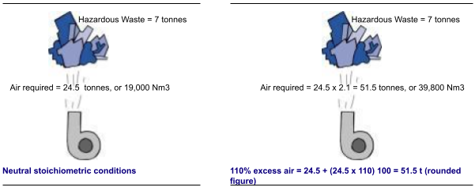
Fig. 8
La température des fumées augmente en même temps que la température de la flamme, provoquant une augmentation de la température de la couche réfractaire.
Considérons l'analyse matérielle pour les types de combustion suivants :
Le premier type, la combustion stoechiométrique, avec le minimum d'air nécessaire, est représenté sur le schéma ci-contre.Fig. 9
Le deuxième type, combustion avec excès d'air, c'est à dire si la quantité d'air disponible dépasse la quantité minimale requise. L'air en excès est plus froid que les gaz (à l'intérieur du four), et n'intervient pas dans la combustion, mais va en revanche absorber de la chaleur, c'est-à-dire refroidir les fumées et les matériaux réfractaires.Le taux de variation des températures des fumées peut être suivi en fonction de la quantité d'air entrant dans le four :
Remarque : cette courbe est spécifique à une qualité de déchets dangereux mélangés et à un type de four à parois non refroidies. Ce type est illustré dans l'exemple ci-dessus, c'est-à-dire avec un excès d'air de 110% Conditions de validité :Dans les zones où l'air est insuffisant, l'augmentation de l'air de combustion disponible augmentera la température de la fumée. Cet effet est inversé dans la zone avec un excès d'air.
Précautions nécessairesIl est important de vérifier systématiquement que l'excès d'air n'atteigne pas des niveaux excessifs, ce qui conduirait à :
Si l'on entend augmenter le rendement du four, il faut réduire l'excès d'air sans affecter le type de combustion, c'est-à-dire sans former de CO au-dessus des seuils acceptables et sans former d'imbrûlés.
Il est important de vérifier que l'excès d'air n'atteigne pas des niveaux trop bas, ce qui conduirait à :
Il est important de vérifier que l'alimentation en air est satisfaisante et que le mélange instantané de déchets est adapté aux niveaux d'air disponibles.
RéglementationLe Ministère de l'Environnement a défini des règles pour la combustion des déchets dangereux, qui peuvent être résumées selon les principes suivants :
La composition de base des déchets peut être comparée à celle d'un combustible standard, tel que le fuel, pour estimer la quantité d'air nécessaire pour assurer une combustion satisfaisante.
Si l'on considère 1 kg de déchets avec un pouvoir calorifique (PCI) de 3 kWh/kg, on peut estimer sa composition chimique comme suit :
De la même manière, pour 1 kg de fioul au pouvoir calorifique (PCI) de 12,7 kWh/kg, on peut estimer sa composition chimique comme :
Le pouvoir calorifique (PCI) du fioul est environ quatre fois supérieur à celui des déchets dangereux, car de plus grandes quantités de carbone sont présentes dans le fioul. Il faudra donc plus d'air pour brûler 1 kg de fioul, que pour brûler la même quantité de déchets dangereux (dans des conditions stoechiométriques) :
Le débit d'air doit donc être adapté pour correspondre au pouvoir calorifique (PCI) du carburant.
La thermolyse (ou pyrolyse) est une technique traditionnelle de traitement thermique utilisée sur des matières organiques en l'absence d'air. Une nouvelle génération de techniques de thermolyse a émergé dans les années 1980 avec un regain d'intérêt pour des capacités de traitement relativement faibles (généralement moins de 200 000 tonnes par an), tant pour les déchets industriels que pour les déchets ménagers. Ces procédés sont actuellement utilisés soit sous forme de prétraitement avec thermolyse seule, soit sous forme de traitement complet avec thermolyse intégrée et déchets résiduels valorisés sur site.
— La thermolyse est un type de traitement thermique à température modérée (450°C - 750°C) en l'absence d'air. Au cours du traitement, la matière organique se décompose en une phase solide (une sorte de semi-coke avec 60-65% En effet, la thermolyse comprend un traitement thermique préalable et les gaz dégagés sont brûlés. La thermolyse doit donc être suivie de la combustion des résidus solides, en réutilisant l'énergie, soit directement sur le site, soit ultérieurement sur un autre site.
A titre d'exemple, une tonne de déchets non traités produira environ 400 kg de gaz et 400 kg de solides après séchage. Les gaz de thermolyse (environ 400 kg) sont caractérisés par un PCI d'environ 3,6 kWh/kg.
Compte tenu de sa composition, ce gaz doit être brûlé sur place, dans des conditions répondant aux normes d'émissions. Les solides de thermolyse (environ 400 kg) contiennent environ 60 à 65%
— Avec des procédés de thermolyse intégrés, le combustible solide et les gaz de thermolyse sont brûlés ou gazéifiés dans un four à haute température (1300°C - 1900°C) où les cendres sont rendues inertes par vitrification. Les fumées doivent également être traitées conformément aux normes applicables en matière d'émissions.
Les incinérateurs de déchets dangereux contiennent généralement plusieurs ventilateurs permettant d'injecter :
L'air primaire alimente les équipements de chauffage installés à l'entrée et dans la chambre de postcombustion. Cet équipement comprend :
L'efficacité de la combustion peut être améliorée dans certaines configurations (fours de petit diamètre et/ou de faible longueur) en ajoutant de l'oxygène ou en injectant de l'oxygène pur dans l'équipement. Le rôle de l'air primaire injecté dans la chambre de postcombustion est également de réduire la teneur en monoxyde de carbone (CO) et d'assurer la combustion complète des fumées.
L'air secondaire injecté à la base de la goulotte de solides assure un flux de déchets entrant régulier. Il fournit également l'oxygène nécessaire à la combustion de la couche de solides dans l'incinérateur à four rotatif.
L'air tertiaire, acheminé autour du four par une couronne, refroidit les parois réfractaires et fournit l'oxygène nécessaire à la combustion.
L'air de refroidissement, injecté dans une couronne à la sortie du four, protège la coque métallique et les clips en fonte sécurisant les briques des températures élevées dans la chambre de post-combustion. Cet air n'entre pas dans le four et n'est pas utilisé pour la combustion.
Le type de combustion peut être évalué en observant la couleur de la flamme :
L'opérateur de l'incinérateur doit également décider de la bonne position de la flamme et de la boule de feu dans le four pour garantir la pérennité des couches réfractaires ; La flamme ne doit pas être trop près de la sortie, car les mâchefers seront dans ce cas de mauvaise qualité (combustion incomplète).
La flamme ne doit pas être trop proche de l'entrée, car la température pourrait augmenter brutalement, produisant du CO, transformant les déchets en scories et usant les briques réfractaires.
Une caméra de surveillance est généralement installée dans la chambre de postcombustion, dans le prolongement du four.
Le ventilateur de tirage est le plus grand et le plus puissant des ventilateurs installés sur le site. Il est situé près de la pile. Le ventilateur est utilisé pour aspirer tous les gaz de combustion produits lors de la combustion des déchets dangereux, maintenir une pression négative à l'intérieur du four et évacuer les gaz à travers la cheminée. Les gaz sont évacués à l'extérieur en haut de la cheminée à grande vitesse, environ 12 à 18 m/s. Les gaz vont continuer à monter et à se mélanger à l'air ambiant. Ils peuvent revenir au niveau du sol à un endroit plus éloigné (à plus de 1 km), au "point d'impact".
La température des gaz évacués étant beaucoup plus élevée (130°C) que celle de l'air utilisé pour alimenter le four en air primaire (20 °C avant préchauffage), le débit des gaz poussés par le ventilateur de tirage est d'environ le double du débit d'air injecté par le ventilateur d'air primaire (l'air va se dilater lorsque la température augmente). Sur cette base, pour un incinérateur avec un ventilateur d'un débit d'air de 40 000 m3/h (130°C), le ventilateur d'air primaire aura un débit d'environ 20 000 m3/h à 20°C.
Remarque : si la capacité de ces ventilateurs est mesurée en Nm3 (0°C), la différence sera beaucoup plus faible : la seule différence serait attribuable aux gaz dégagés par les ordures ménagères lors de la combustion et par l'apport d'air ou de gaz à certains points du procédé. La loi de conservation de la masse explique l'augmentation de la quantité de gaz mesurée en Nm3 (0°C).
Le fonctionnement d'un ventilateur de tirage se caractérise principalement par sa capacité à extraire (aspirer) les fumées et à les évacuer à l'extérieur via la cheminée. Cette capacité peut être mesurée en fonction de la pression de fonctionnement du ventilateur. Cette pression est contrôlée automatiquement car ce facteur est essentiel pour le fonctionnement stable de l'ensemble incinérateur/chaudière.
La pression est un facteur physique et peut être mesurée. C'est le résultat d'une force appliquée sur une surface.
Ex : pression appliquée à la surface d'une table
La pression appliquée à la surface de la table sera de : 100 kg (force) 2000 cm2
La pression appliquée aux quatre pieds de la table au sol sera de : 100 kg (force) 4 x 25 cm2
(1) La masse de la table est supposée négligeable, c'est-à-dire prise égale à 0 dans le calcul Plus la force appliquée est importante une surface plus petite, plus la pression est élevée. Cet effet permet à une personne chaussée de raquettes de marcher dans la neige sans s'enfoncer, les chaussures sont larges, ce qui augmente la surface de contact avec la neige et diminue la pression appliquée au sol par surface donnée.
Unités de pressionDans l'exemple précédent, la pression a été calculée en kg/cm². De nombreuses autres unités peuvent être utilisées pour exprimer la pression et de nombreux facteurs de conversion peuvent être appliqués pour comparer les pressions indiquées dans les différentes unités.
Par exemple : 1 kg/m2 = 98 000 Pa (le pascal est l'unité SI) ou = 98 kPa ou = 0,98 bar
1 bar, comme indiqué sur les baromètres, correspond approximativement à la pression atmosphérique. Cette pression est présente partout à la surface de la Terre et varie légèrement en fonction de l'altitude et des conditions atmosphériques. Les fluides (eau, huile), l'air, les gaz et la vapeur sont généralement sous pression dans une usine d'incinération. Lorsqu'un gaz est comprimé, la distance entre les molécules (unités de base d'un élément) est réduite. Comme les atomes ont naturellement tendance à se repousser, une certaine force est nécessaire pour comprimer un gaz.
La pression est appliquée de manière égale dans toutes les directions. Si l'on considère l'exemple d'une bouteille de gaz contenant du gaz à une pression de 4 bars, alors chaque molécule de gaz est soumise à 4 bars. Des colonnes de liquide (eau ou mercure) contenues dans un tube vertical peuvent être utilisées pour mesurer la pression. Lorsque les fluides sont au repos, la pression correspond au niveau du fluide au dessus du point de mesure.
Par exemple, dans une piscine contenant de l'eau à une profondeur de 3,8 m, si la pression est mesurée au fond de la piscine, on obtiendra 3,8 mCE, soit 3,8 mètres de colonne d'eau. Vous comprenez maintenant la signification de mWC ou mmWC.
Comment convertir les unités Les unités utilisées pour mesurer la pression peuvent avoir des valeurs numériques très grandes ou très petites. Des multiples et sous-multiples sont utilisés pour simplifier l'écriture des valeurs :m pour milli (millième) (0,001) k pour kilo (millier) (1000) M pour méga (million) (1 000 000)
D'où : 1000 Pa = 1 kPa = 0,01 bar = 10 mbar
Un bar est une très grande unité de pression. Un Pascal (Pa) et un millimètre de colonne d'eau (mmCE) sont de très petites unités : 1 bar = 10 mCE 1 bar = 100 kPa
Pression Absolue ou Réelle, Pression Relative, Pression AtmosphériqueSi la pression d'un gaz est mesurée à l'aide d'un manomètre, la pression relative est obtenue. Afin d'obtenir la pression réelle appliquée au gaz, la pression atmosphérique doit être ajoutée à la pression relative.
p réel = p relatif + p atmosphérique
La pression atmosphérique est d'environ 1 bar. Les manomètres mesureront toujours une pression inférieure de 1 bar à la pression réelle.
Prenons l'exemple d'une bouteille de gaz où un manomètre mesure 4 bars :
Le gaz est en fait soumis à une pression de 5 bars. (4 bar de pression relative + 1 bar de pression atmosphérique)
Si le manomètre indique 0 bar, la pression réelle correspond à la pression atmosphérique, d'environ 1 bar absolu. Désormais, on ne se référera qu'à la pression relative ou à la valeur donnée par le manomètre.
Dans un conduit ou un tuyau, pour que l'air circule de A vers B, la pression en A doit être supérieure à la pression en B. La différence de pression pA – pB est appelée la charge perte ou la chute de pression.
Cette diminution de pression est provoquée par des frottements dans le conduit d'air, qui s'opposent au flux d'air, créant cette perte de charge ou perte de charge. En général, tout accessoire installé sur le parcours perturbera la circulation de l'air et entraînera une chute de pression. Cette diminution est indiquée en mmCE, tout comme la pression.
Le simple fait de souffler de l'air dans un environnement confiné entraînera une surpression ou une pression positive. Par exemple, lorsque vous soufflez dans un ballon, une pression positive est créée à l'intérieur du ballon. Si vous percez le ballon, l'air s'échappera car la pression à l'intérieur du ballon est supérieure à la pression atmosphérique.
D'autre part, l'air doit être aspiré de la chambre pour créer une pression négative. Dans ce cas, la pression à l'intérieur de la chambre sera inférieure à la pression atmosphérique (l'air extérieur aura tendance à entrer dans la chambre).
La pression négative à l'intérieur du four est maintenue constante grâce au ventilateur de tirage ou à l'extraction.
La dépression à l'entrée est maintenue entre – 3 mmCE et – 7 mmCE (inférieure à la pression atmosphérique).
Si la pression négative n'est pas maintenue, le gaz fuira, poussant la poussière du four à l'extérieur.
Si la pression négative est trop forte, des quantités excessives d'air extérieur entreront dans le four et le pourcentage d'oxygène à l'intérieur du four augmentera.
Si la pression négative n'est pas adéquate, de la fumée chaude pourrait remonter dans la goulotte de solides et déclencher un incendie dans la trémie d'alimentation.
Les incinérateurs de déchets dangereux sont divisés en deux sections : Un four rotatif Une chambre de post-combustion
Les viroles sont généralement cylindriques et les dimensions varient (Cf. tableau des dimensions des fours SARPI/ONYX).
Le diamètre du four doit être suffisamment important pour accepter la température, et surtout pour accueillir tous les équipements d'alimentation autour de l'entrée (goulotte à solides, pompe à boues, brûleurs). Le four doit être suffisamment long pour assurer un temps de séjour minimum et garantir des mâchefers de bonne qualité.
Un diamètre de 4 mètres combiné à une longueur de 12 mètres sont généralement considérés comme des valeurs optimales pour une unité traitant 20 000 t/h.
Certains fours peuvent être équipés d'une section réduite (partie conique) à l'entrée et à la sortie (c'est le cas pour les fours qui transforment les déchets en scories, cf. chapitre 6).
La chambre de postcombustion (PC) joue deux rôles : compléter la combustion des gaz dégagés par le four rotatif utiliser comme incinérateur statique pour brûler certains déchets liquides
La conception de le PC est dicté par la nécessité d'obtenir le temps de séjour de 2 secondes exigé par la réglementation après l'injection finale d'air de combustion.
table[H] tabular{|c|c|c|} LPC&10,0 & m
DPC& 4,5 &m
VPC & 159,0 & m3
Débit fumées (stack) & 50 000 &Nm3/h
Débit fumées (PC) &40 000 &Nm3/h
T & 1 100 & °C
Débit fumées (PC) &187 440 & Nm3/h
t = VPC / Fsmoke & 3.1 & s
tabular
table

Fig. 10
Exemple de calcul du temps de séjour des fumées dans une chambre de postcombustion
En mode « décantation », le diamètre du PC est généralement pris égal à 1,5 fois le diamètre du four. Les vitesses de fumée dans le PC sont alors suffisamment faibles pour permettre à la poussière contenue dans le gaz de se déposer. (cette conception est utilisée en France)
En mode "turbulent", le diamètre du PC est quasiment identique à celui du four. Certaines géométries intègrent même une section réduite. (cette conception est utilisée en Italie et aux USA, etc.)
La partie inférieure du PC peut être totalement ouverte (France) ou présenter divers degrés de pente.
table tabular{>{}p{0.15}>{}p{0.3}>{}p{0.4}} & Avantages & Inconvénients
Ouvert &tabular
table

Fig. 11
Plusieurs technologies différentes existent, et nous en décrirons simplement quelques-unes. Plusieurs de ces incinérateurs ont une capacité de 8 à 40 tonnes par heure. Différents modèles existent et le flux d'air peut être parallèle ou opposé au mouvement de la grille.
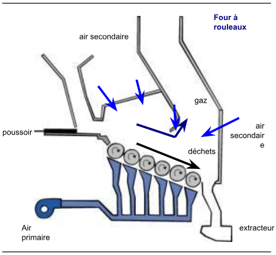
Fig. 12
La grille est à un angle de 20 à 30° C. La grille se compose de six rouleaux rotatifs. La vitesse de rotation de chaque rouleau est modifiée en fonction de la combustion des déchets et de leur emplacement sur la grille. La vitesse de rotation du premier rouleau est de 0,5 t/heure, et celle du dernier rouleau d'env. 1 t/heure. Les déchets ménagers sont mélangés et déplacés vers l'avant en inclinant et en faisant tourner les rouleaux. Les déchets restent dans l'incinérateur pendant plus de 45 minutes.
De l'air primaire est injecté sous les rouleaux (la température des rouleaux peut atteindre 400°C à 420°C). De l'air secondaire est injecté dans la chambre de combustion.
Le premier rouleau est la zone de séchage et part du poussoir. Les deuxième, troisième et quatrième rouleaux se trouvent dans la zone de combustion. Les cinquième et sixième rouleaux sont utilisés pour achever la combustion et refroidir les mâchefers.
Incinérateurs à grille mobile DBACe sont des fours à courant médian. Les déchets sont déversés sur le plan de grille par un poussoir d’alimentation. La grille est constituée de 12 (maximum) gradins inclinés à 24° dont un sur deux est mobile. Les ordures sont poussées par les gradins mobiles. On commence un cycle d’avancement et de retournement des déchets par le mouvement de la partie la plus basse de la grille. L’épaisseur moyenne de la couche de déchets est de 40 cm et est réglée par les différentes vitesses de chaque grille, et parfois par un volet situé au bas de la grille. L’air primaire est soufflé sous la grille, l’air secondaire dans la zone de combustion.
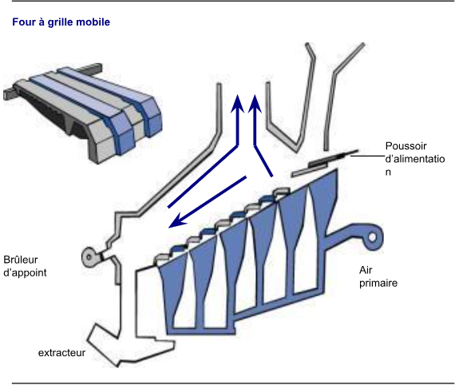
Fig. 13
Incinérateur VolundPlusieurs de ces incinérateurs ont une capacité de 3 à 20 tonnes par heure . L'air est soufflé dans la même direction que le mouvement de la grille. Ces incinérateurs comportent trois à cinq grilles successives à un angle de 15° et de 7,5 ° (la pente des grilles dépend de cet angle) :
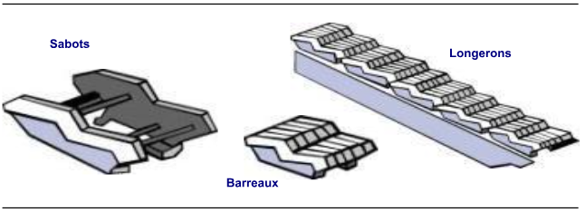
Fig. 14
Chaque grille comprend :
Les déchets sont déplacés vers l'avant grâce au mouvement de va-et-vient des espars. Tous les autres longerons se déplacent d'avant en arrière.
Trois types d'air sont injectés dans l'incinérateur :
L'épaisseur de la couche d'ordures ménagères est ajustée en fonction de la vitesse de chaque grille.
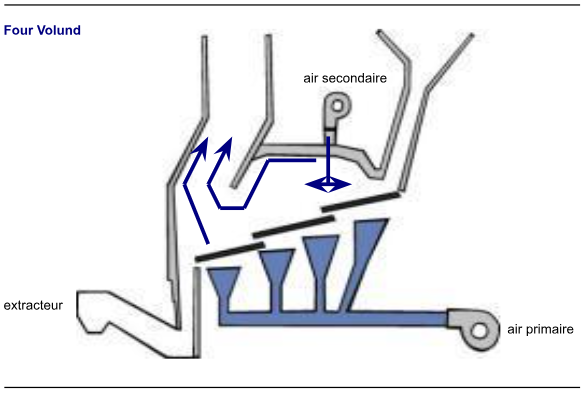
Fig. 15
Incinérateurs Martin GrateLa capacité de ces incinérateurs varie entre 5 et 60 tonnes par heure. L'air est soufflé dans la direction opposée au mouvement de la grille.
La grille est à un angle de 26°C. La grille comporte treize marches et une marche sur deux est mobile. Les traverses des marches mobiles peuvent se déplacer très légèrement les unes par rapport aux autres (d'environ un ou deux cm). Les marches se déplacent dans la direction opposée au mouvement des déchets. La marche mobile pousse et mélange les déchets. Les déchets tombent par gravité. La grille est considérée à l'envers.
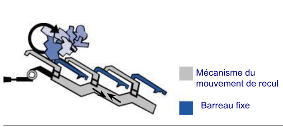
Fig. 16
L'air primaire est soufflé sous la grille et l'air secondaire dans la chambre de combustion. La combustion se produit dans la partie médiane de la grille et se termine dans la partie inférieure. Un tambour cylindrique en bas de la grille permet d'évacuer les mâchefers et d'ajuster la couche de déchets.
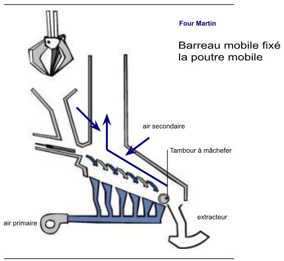
Fig. 17
Incinérateurs de type SteinCes incinérateurs fonctionnent de la même manière que les incinérateurs Martin. Les traverses de grille sont légèrement plus grandes et les traverses de marches mobiles ne bougent pas les unes par rapport aux autres.
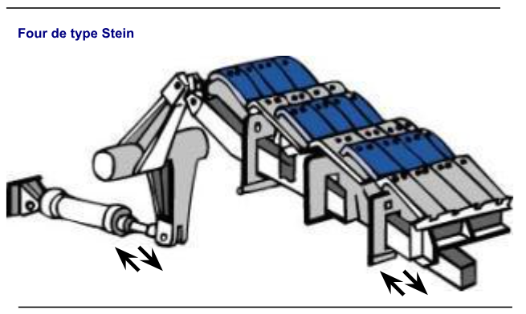
Fig. 18
Ces incinérateurs permettent de brûler différents types de déchets et sont compatibles avec les variations de pouvoir calorifique (PCI). Ces incinérateurs sont rectangulaires à l'intérieur. Les grains de sable en suspension dans l'incinérateur, faisant partie d'un lit fluidisé, sont chauffés. Les déchets prébroyés sont ensuite injectés dans l'incinérateur et brûlés.
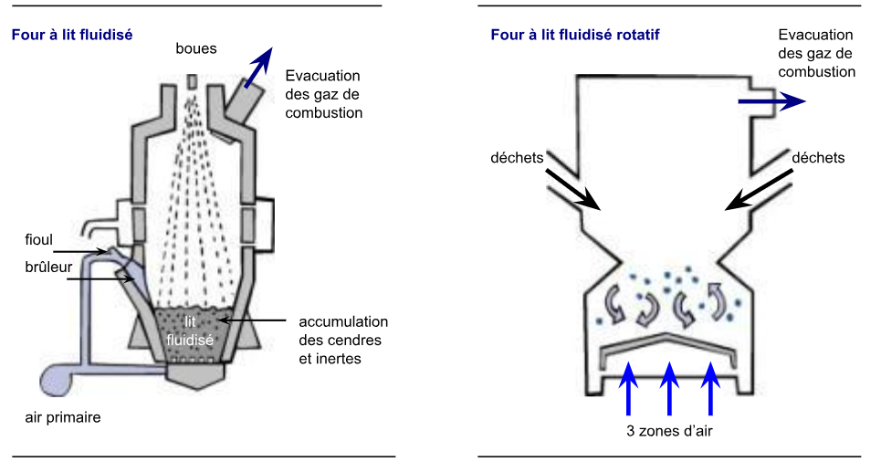
Fig. 19
L'incinérateur à lit fluidisé rotatif est caractérisé par l'air circulant à travers le lit fluidisé à des vitesses d'environ 1 à 2 m/s. L'air de combustion est soufflé vers le haut sous une grille fixe, soulevant la masse de particules solides. Cette masse reste en suspension dans l'incinérateur.
99%
La grille est inclinée et prend la forme d'une pyramide à base rectangulaire ; trois zones distinctes existent : une zone centrale, où le sable fait partie du lit fluidisé ; deux zones périphériques, où le flux d'air se déplace plus rapidement que la zone centrale, créant des vortex et tirant les particules vers la zone centrale. Un extracteur peut être utilisé pour évacuer les cendres et les éléments inertes.
Incinérateurs à lit fluidisé circulantLa combustion dans ces incinérateurs fonctionne de la même manière que les incinérateurs à lit fluidisé rotatif. L'air circule à une vitesse plus rapide d'environ 4 à 8 m/s et aucun vortex de particules ne se forme. La masse et l'air de combustion montent jusqu'en haut du four. La masse et l'air traversent un cyclone, les éléments les plus lourds retournent au four, et les éléments les plus légers (cendres, gaz) s'échappent vers les systèmes de traitement en sortie de four.
Certains incinérateurs, comme les fours Laurent Bouillet, sont oscillants, c'est-à-dire que la rotation est incomplète : le boîtier oscille avec un mouvement de va-et-vient, décrivant un arc d'environ 210°, avec 20 à 30 oscillations par heure .
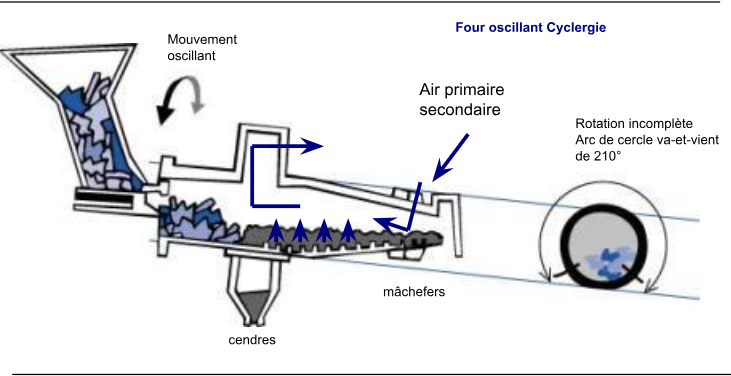
Fig. 20
Les fours et chambres de post-combustion comprennent :
Les différentes couches réfractaires et isolantes de l'incinérateur sont utilisées pour :
Les couches réfractaires doivent résister :
La couche réfractaire externe peut s'écailler en cas de brusques changements de température. Les matériaux denses sont vulnérables à cet effet. La corrosion peut être causée par des produits chimiques contenus dans les gaz de combustion ou les liquides (cendres fondues) réagissant avec les matériaux réfractaires. Cet effet est particulièrement critique pour des températures supérieures à 1000°C. Le chlore, le soufre et le fluor sous forme d'acides ou de sels en sont les principales causes. Les matériaux poreux sont vulnérables à cet effet.
Les cendres volantes et les particules solides se déplaçant autour de l'incinérateur à grande vitesse entraînent une abrasion. Ce phénomène usera rapidement la couche réfractaire. L'état de la surface de la couche réfractaire est important. Des matériaux à base d'alumine Al2O3 (60 - 85%
Le tableau suivant résume les différents types de matériaux réfractaires et leurs propriétés respectives.
| Category | Aggregate | Binder | Notes |
|---|---|---|---|
| Silica products | Silica | Silica | Pure silica sintering |
| Silica products | Silica | Silica + vitreous phase | Binding weakened by the vitreous phase obtained using impurities |
| Silica-argillaceous and argillaceous products | Grog | Vitreous phase | — |
| Products with high alumina content, group 1 | |||
| 1 — Alumina silicate | Silimanite, Andalousite, Kerphalite | Mullite + vitreous phase | % mullitisation depending on baking temperature and time |
| 2 — Mullite | Mullite | Mullite + vitreous phase | Small quantities, vitreous phase |
| 3 — Bauxite | Bauxite | Vitreous phase | — |
| 4 — Corundum | Corundum | Mullite + vitreous phase | % mullitisation depending on baking temperature and time |
| Products with high alumina content, group 2 | |||
| — | Vitreous phase grog | — | Obtained by adding… |
Fig. 21
Plus le matériau est réfractaire :
SARPI/ONYX utilisent généralement des briques de type ELEKTRA N avec 80%
Dans certains cas particuliers (déchets qui fondent facilement, températures élevées conduisant à un mode de scorification), des briques de meilleure qualité sont nécessaires : par exemple KR85C (85%
Ce refroidissement est bénéfique car il aide à solidifier les scories sur les briques en évacuant la chaleur du four, protégeant les briques réfractaires.
Pour ce qui est du plafond de la chambre de postcombustion, des briques contenant 60%
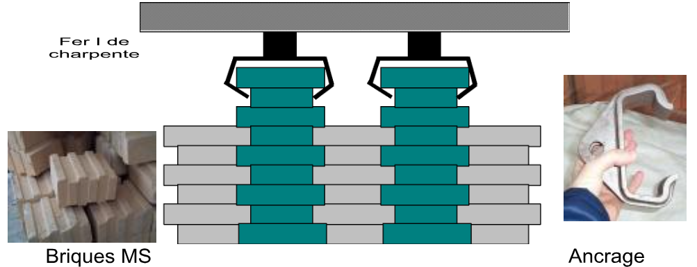
Fig. 22
Enfin, l'entrée de l'incinérateur et les chemins de chaudières initiales sont revêtues avec du béton réfractaire (cf. section suivante) des bétons réfractaires à basse teneur en ciment sont poreuses et moins ont plus grande résistance mécanique. Lors de la préparation et de l'installation des briques réfractaires, de l'eau doit être ajouté (quantités variables), pour mouler la couche réfractaire dans les zones difficiles d'accès.
Les couches réfractaires peuvent résister à des températures allant de 800 à 1800°C selon le type.
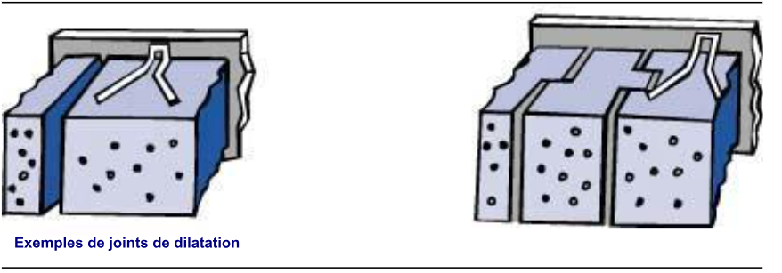
Fig. 23
Le matériau réfractaire va se dilater en s'échauffant et ce phénomène physique est impossible à empêcher. Si un mur réfractaire monocouche est construit entre deux points fixes, il ne pourra pas se dilater librement, ce qui entraînera une fissuration et une rupture potentielle du casing cadre lorsque la température de l'incinérateur augmente. Des joints de dilatation sont donc installés, permettant aux matériaux réfractaires de se dilater.
Un mur d'un mètre de long s'étendra d'environ 1 à 1,2 cm aux températures habituelles des incinérateurs. Pour un mur d'une longueur de 5 m, cela représente un supplément de 5 cm pour les matériaux réfractaires fréquemment utilisés.
Remarque : chaque matériau a son propre coefficient de dilatation, qui peut être négatif dans certaines catégories.
De nombreux types de matériaux réfractaires existent :
Certains matériaux réfractaires sont précuits sous forme de briques ou de pièces standard. Les autres sont considérés comme non préformés et livrés en vrac. Ils sont ensuite mélangés avec un liant sur le site, puis façonnés. Des systèmes d'ancrage sont nécessaires pour fixer les matériaux réfractaires au mur.
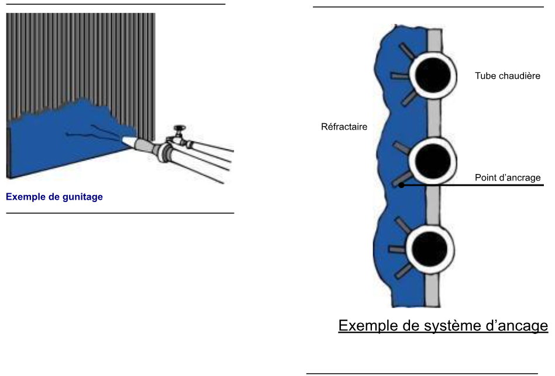
Fig. 24
Les types de béton suivants sont utilisés :
Des liants à base de ciment hydraulique sont utilisés pour durcir le béton et assurer sa cohésion. Ces liants peuvent être hydratés à l'aide d'eau à basse température, provoquant le durcissement du matériau. Ils contiennent un pourcentage élevé d'eau par rapport aux autres matériaux réfractaires, qui varient entre 4 et 15%
Un liant chimique est ajouté pour les plastiques et les revêtements :
Les propriétés isolantes des bétons réfractaires seront proportionnelles à leur faible densité (hors matériaux fibreux). Leur résistance mécanique diminuera au fur et à mesure que leurs propriétés isolantes augmenteront. Les parois réfractaires standard (non refroidies) comprendront les éléments suivants :
Cette eau doit être éliminée pour optimiser les propriétés des matériaux réfractaires.
Cette eau est éliminée en augmentant progressivement la température du matériau réfractaire après application. L'eau va se vaporiser dans le matériau réfractaire et être expulsée par surpression. La température doit être augmentée :
Si la couche réfractaire n'est pas uniformément chauffée, une surchauffe locale se produira, ce qui pourrait provoquer des fissures, voire détruire la couche réfractaire.
Si la montée en température n'est pas maîtrisée (par exemple 30°C par heure), trop d'eau sera transformée en vapeur. La vapeur ne peut pas s'échapper et la pression à l'intérieur des matériaux réfractaires va augmenter, et peut même atteindre 150 bars. Cette haute pression entraînera des explosions et l'effondrement de la couche réfractaire.
Tableau de montée en températureGrâce à la montée en température progressive, l'eau et la vapeur peuvent être progressivement évacuées à l'extérieur de l'unité réfractaire pour éviter tout dommage dû à une surpression.
Les meilleurs résultats peuvent être obtenus en contrôlant la température à l'intérieur de l'incinérateur à l'aide de brûleurs installés à des endroits soigneusement choisis et en faisant circuler de l'eau chaude dans les parois. Aucune charte standard n'existe, cependant des chartes sont disponibles pour chaque type de matériau réfractaire et applicables à tous les types d'utilisation.
Remarque : avec des matériaux réfractaires contenant un faible pourcentage d'eau, le séchage peut être accéléré en augmentant la température de 50°C chaque heure.Contacter le fabricant du matériau réfractaire dans tous les cas, il pourra fournir les courbes de montée en température. Ces cartes couvrent généralement :
Le graphique présenté ici est valable pour un matériau réfractaire dense d'une épaisseur de 150 mm.
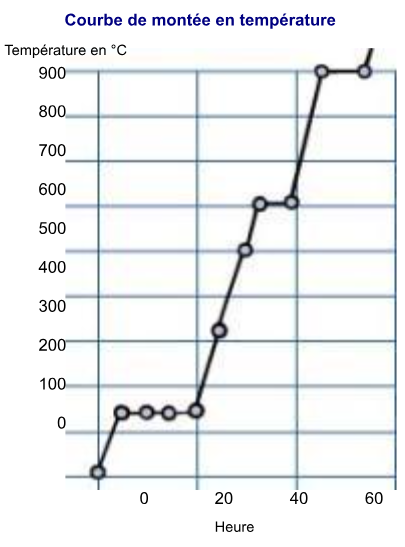
Fig. 25
Formation de clinkerSi le matériau réfractaire n'a pas refroidi correctement, les cendres vont fondre au contact et coller à la couche, formant du clinker. Ces cendres empêchent les matériaux réfractaires de se refroidir convenablement, ce qui aggrave la situation. Ceci provoquera une usure préalable de la couche réfractaire ou un colmatage de l'incinérateur. Le clinker se formera entre 900 et 1000 °C environ.
De nombreuses opérations de sous-ensembles de l'incinérateur, telles que la vanne de fermeture de trémie, le pousseur de déchets, le système d'entraînement du four rotatif ou l'extracteur de fond, sont entraînées par un système hydraulique fonctionnant avec un fluide sous pression.
Ce système comprend :
Le système hydraulique comprend généralement deux pompes à pistons (dont une pompe de secours), entraînées par des moteurs électriques à vitesse constante. Le système alimente les actionneurs en fluide à un débit suffisant et doit maintenir la pression de service nécessaire au bon fonctionnement des actionneurs. Le niveau minimum dans le réservoir tampon (par exemple 400 litres) et la pression de service, d'environ 100 bars, doivent être contrôlés.
Les actionneurs entraînent l'équipement de l'incinérateur. Ils contrôlent les mouvements de va-et-vient des pièces mobiles. Vérifiez qu'aucun liquide ne fuit des actionneurs et des tuyaux. Le système de distribution comprend toutes les canalisations alimentant le fluide, du système aux actionneurs, et les distributeurs, qui contrôlent le débit dans les actionneurs, en fonction de la vitesse requise pour le mouvement des actionneurs.
Les éléments suivants doivent être vérifiés :
Les fuites d'huile entraînent fréquemment des accidents ou des chutes dues à des sols glissants. De plus, le pétrole est un excellent carburant et donc un risque potentiel d'incendie. L'exploitant est responsable de signaler toute fuite afin d'assurer la sécurité des opérations. Les niveaux d'huile doivent être vérifiés périodiquement et sans faute et un filtre doit être utilisé pour garantir la propreté de l'huile ajoutée au système.
Des trappes d'inspection et d'accès sont disponibles à divers endroits autour de l'incinérateur. Les trappes peuvent être utilisées pour visualiser l'état et l'emplacement de l'incendie dans l'incinérateur.
Le contrôle principal s'effectue à travers une trappe située dans la chambre de postcombustion, dans le prolongement de l'incinérateur. En général, une caméra refroidie par air est installée et peut être utilisée pour contrôler visuellement la combustion (si le débit de liquide est élevé, la vapeur d'eau empêche la visualisation à l'aide de cette caméra). Le couvercle en verre de protection de cet appareil photo est nettoyé régulièrement.
Certains hublots sont en verre épais et protégés par des trappes. La surface intérieure peut être nettoyée à l'aide de buses d'injection d'air comprimé. Ces buses protègent l'opérateur de la forte chaleur rayonnée par la flamme et des éventuelles poussières incandescentes projetées à l'extérieur de l'incinérateur.
Les opérateurs ne doivent jamais exposer une partie non protégée de leur corps au rayonnement direct de l'incinérateur, que ce soit par une porte d'accès ouverte ou par un port d'observation sans verre de protection. N'oubliez jamais que les températures à l'intérieur de l'incinérateur atteignent environ 1000°C, ce qui représente un risque élevé d'accidents graves.
Les ingénieurs et les techniciens utilisent des méthodes standard pour expliquer ou décrire un système ou un équipement complexe. L'une de ces méthodes consiste à dessiner un diagramme pour illustrer la route ou le flux emprunté par les masses de tous les matériaux et produits entrants et sortants d'un système : le bilan de masse. Une approche identique est appliquée pour illustrer la quantité d'énergie entrante et sortante d'un système ou d'un équipement : le bilan énergétique.
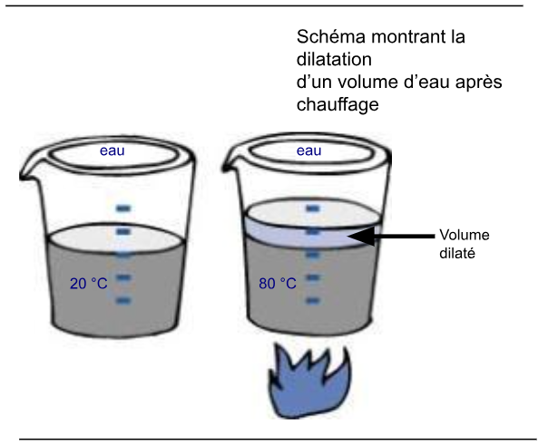
Fig. 26
Quelle que soit la transformation subie par un matériau (chauffage, refroidissement, broyage ou combustion), la quantité de matériau restera constante : la masse est maintenue.
La masse est donnée en kilogrammes.
En revanche, le volume n'est pas maintenu, c'est-à-dire l'espace occupé par la quantité de matière change. Ce volume dépendra de la température et de la pression, comme expliqué ci-dessous.
Remarque : le volume va augmenter, c'est-à-dire augmenter, en raison du chauffage.
Exemple de dilatationSi l'eau est chauffée : le volume de post-chauffage sera d'autant plus important que l'eau s'est dilatée ; la masse n'a pas changé.
Exemple de compression Si un gaz est comprimé, son volume diminuera, mais sa masse restera inchangée car la quantité de matière n'a pas changé.
Si deux matériaux, de types différents, sont combinés, leurs masses peuvent être additionnées. Plus généralement, pour tous les systèmes de traitement des matières, ce qui suit est vrai :
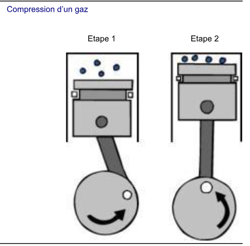
Fig. 27
masses entrantes totales = masses sortantes totales
et, sur cette base :
débits massiques entrants totaux = débits massiques sortants totaux
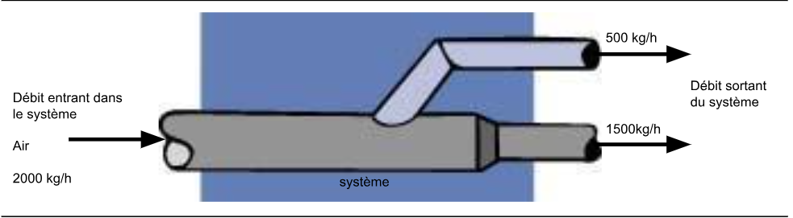
Fig. 28
Dans ce cas, débit massique entrant = débit massique sortant = 2000 kg /h
La notion de mètre cube normal, ou Nm3, est largement utilisée pour les gaz (air, gaz naturel, propane, etc.) : elle peut être utilisée pour déterminer la quantité de gaz traversant un appareil sans tenir compte des variations de température, et donc de volume, si le gaz est soumis à des variations de température importantes. Nm3, contrairement au m3, s'applique quelle que soit la transformation considérée (par exemple le chauffage), il est donc directement proportionnel à la masse.
1 Nm3 d'air est le volume occupé par 1,293 kg d'air prélevé à 0°C à pression atmosphérique.
Prenons l'exemple du chauffage de l'air primaire dans un incinérateur. Les situations suivantes sont identiques, seules les unités changent :
Exemple : Chaleur
Moteurs à combustion
Énergie mécanique
La chaleur est convertie en énergie mécanique par un moteur (par exemple un moteur de voiture). L'explosion qui se produit lorsque le mélange d'air et de carburant libère de la chaleur et que les gaz détendus appliquent une force sur le piston, provoquant la rotation du piston et de son système de bielle et de manivelle.
Transfert de chaleur :La chaleur est une forme d'énergie. La chaleur est transférée si une différence de température apparaît entre deux corps (solides, liquides ou gazeux). L'énergie sera transférée du corps le plus chaud au corps le plus froid. Trois types de transfert de chaleur existent :
La chaleur est transférée au sein des solides par conduction si, par exemple, les parois sont à des températures différentes, ou entre plusieurs solides à des températures différentes s'ils entrent en contact. Les matériaux conduisent la chaleur à des degrés divers : l'acier et le cuivre sont d'excellents conducteurs de chaleur ; l'air et la laine de verre sont de bons isolants, ou en d'autres termes, de mauvais conducteurs.
Convection :La chaleur est échangée par convection entre deux corps à des températures différentes en raison de leurs vitesses respectives. On a plus froid si la vitesse du vent est plus forte car les échanges thermiques par convection ont augmenté.
Radiation :L'énergie est transférée par rayonnement sans aucun matériau de support et peut même se produire dans le vide. En fait, tous les corps émettent de l'énergie sous forme de rayonnement, proportionnellement à la température. La source de chaleur par rayonnement la plus connue est le soleil.
Le principe de la conservation de l'énergieEn général, l'énergie ne peut être ni créée ni perdue, et est systématiquement convertie en un autre ou plusieurs autres types d'énergie : la conservation de l'énergie. Avec un système de chauffage à eau chaude, nous pouvons dresser le bilan énergétique d'une chaudière.
Remarque : la chaudière fournit à l'eau 800 kWh sur les 1000 kWh générés par le brûleur. 200 kWh sont perdus sous forme de gaz de colle.Énergie totale = énergie utile + énergie perdue 1000 kWh = 800 kWh + 200 kWh
Le concept d'efficacitéL'efficacité de la machine est évaluée en fonction du rapport entre la quantité d'énergie utile réellement fournie et la quantité totale d'énergie consommée. Dans notre exemple, l'efficacité est égale à : 800/1000 = 0,80
Donc l'efficacité est de 80%
Considérons quelques exemples d'efficacité énergétique :
La quantité de chaleur dégagée par un kilogramme d'ordures ménagères doit être déterminée afin de mesurer la quantité totale d'énergie produite par la combustion des ordures ménagères dans un incinérateur. Ce paramètre est connu sous le nom de valeur calorifique (CV). Il est mesuré en kcal/kg. Cependant, des mesures seront effectuées en kWh/kg dans le cadre de ces modules de formation afin de simplifier les comparaisons entre l'énergie fournie au procédé et l'énergie nette produite par un turbogénérateur (kWh).
Deux types de pouvoir calorifique existent :
GCV = PCI + Énergie nécessaire pour vaporiser l'eau contenue dans les déchets. Le GCV est systématiquement supérieur au NCV.
Exemple :Le pouvoir calorifique des ordures ménagères banales en France est donné par les valeurs suivantes.
PCI = 2,3 kWh/kg, soit environ 2000 kcal/kg GCV = 2,6 kWh/kg
Remarque : en Amérique du Nord, la valeur du PCI est d'environ 3 kWh/kg.Pour une chaudière d'incinération, le pouvoir calorifique net (PCI) représente la quantité nette d'énergie disponible pour la récupération. Les classements des équipements sont généralement donnés en référence au PCI des déchets.
Considérons l'exemple d'un incinérateur dans lequel 1 t/h est introduite, soit 1000 kg de déchets dangereux (une partie de ces déchets est solide, et le reste est liquide ; les proportions varient selon l'installation et les sources).
Remarque : la quantité de matière entrant dans l'incinérateur est égale à :masse d'air + masse de déchets dangereux 6000 kg + 1000 kg = 7000 kg
La quantité de matière sortant de l'incinérateur est égale à :
masse de gaz de combustion + (masse de solides) 6650 kg + (50 + 250) kg = 7000 kg
La masse est conservée.

Fig. 29
Considérons l'exemple d'un incinérateur dans lequel l'énergie totale produite par la combustion est de 20 000 kWh. Une partie de cette énergie (15000 kWh) est récupérée sous forme de vapeur, puis réutilisée pour le chauffage ou pour produire de l'électricité : énergie utile. Une partie de cette énergie (500 kWh) est perdue dans les fumées et via diverses déperditions thermiques
L'énergie est conservée :
Énergie totale = énergie utile + énergie perdue 20000 kWh = 15000 kWh + 5000 kWh Le rendement de l'incinérateur peut être calculé comme suit :
equation Efficacité = {Energie utile}{Energie total}=15000{20000} = 0.75 i.e 75% {equation
Ceci correspond à la quantité d'énergie nécessaire pour augmenter la température d'un corps ou permettre un changement d'état (transformer un liquide en gaz).
Unités de chaleur unitésDeux différentes existent :
Une kilocalorie est la quantité d'énergie utile nécessaire pour augmenter la température de 1 kg d'eau de 1 °C. Un joule est le travail effectué par une force constante de 1 Newton (N) sur une distance de 1 m .
Conversions d'unités : 1 kcal = 4180 J = 1,16 Wh 1 kcal/kg = 1,16 Wh/kg RatioLa quantité d'énergie nécessaire pour augmenter la température d'un corps dépend de :
equation Heat = mass specific heat (initial temperature - final temperature) equation
avec :
Pour chauffer 5 kg d'eau de 20°C à 50°C, l'énergie suivante est nécessaire :
equation 5 1.16 (50 - 20) = 174 Wh equation Exercice
Calculer la quantité d'énergie requise par le réchauffeur d'air primaire dans un incinérateur pour chauffer 6000 kg d'air de 20 °C à 120 °C.
equation Débit={Flux}{Temps} equation
Deux types de débits existent :
equation débit volumique = {Volume du flux}{Temps} débit massique = {Masse du flux}{Temps} equation
Unités de débitLes éléments suivants sont définis
débit volumique
L'unité standard est le mètre cube par seconde (m3/s). Le mètre cube par heure m3/h est plus généralement utilisé pour les incinérateurs.
débit massique
L'unité standard est le kilogramme par seconde (kg/s). La tonne par heure (t/h) est plus généralement utilisée.
Lorsque m3/h ou t/h sont utilisés, cela répond à la question : combien de déchets ont été brûlés en une heure ?
Rapport entre le débit volumique et le débit massique Il est facile de basculer entre le débit volumique et le débit massique si l'on connaît la densité des matériaux. Cette densité est généralement connue. Il répond à la question : combien de kg contient 1 m3 ? ou combien pèse 1 m3 ?
Exemple : l'eau a une masse de 998 kg pour 1 m3 ou de 0,998 kg pour 1 litre ; l'air a une densité de 1,2 kg/m3 dans les conditions suivantes : à pression atmosphérique et à une température de 20°C.Débit massique = densité x débit volumique
ApplicationIl est facile d'imaginer le débit d'un robinet. Si vous parvenez à remplir un seau de 10 l en 1 minute : Vous pouvez conclure que le débit volumétrique du robinet est de 10 l/min., ou si vous aviez laissé le robinet couler pendant 1 heure, soit 60 minutes, vous auriez ont récupéré 600 l, donc le débit est égal à 600 l/h. Or, 1 litre d'eau pèse 1 kg, soit un débit massique de 600 kg/h.
ExerciceCalculer le débit massique traversant un ventilateur d'air primaire si le débit mesuré est égal à 5000 m3/h et la densité de l'air est de 1,2 kg/m3. Indice
MasseDéfinition
La quantité de matière dans un corps. La masse est donnée en kilogrammes (kg). La masse d'un corps n'est pas affectée par la pression ou la température.
Unités de masse
Différentes unités de masse existent :
1 t = 1000 kg
Ratio de conservation de masse
Si deux matériaux sont combinés, leurs masses peuvent être additionnées. Ce qui suit est vrai dans un système où le matériel passe et n'est pas retenu :
Masses entrantes totales pour le système = masses sortantes totales pour le système.
Application
6 tonnes de déchets entrent dans un incinérateur en même temps que 42 tonnes d'air. La masse totale entrant dans l'incinérateur est égale à : 6 + 42 = 48 t
Exercice
Calculer la masse totale entrant dans l'incinérateur, en supposant qu'un grappin introduit 10 tonnes d'ordures ménagères tandis que le ventilateur injecte 70 tonnes d'air.
Index Puissance thermiqueIl convient de revoir la définition de la chaleur pour bien comprendre ce concept.
Définition : La puissance thermique indique le calibre de l'appareil installé. La puissance est la quantité d'énergie potentiellement fournie par l'appareil par unité de temps.equation Puissance = {Montant d'énergie}{Temps} equation
Unité de puissanceL'unité standard de puissance est le Watt (W),
1 Watt = = ou 1 kW = 1000 W
La kilocalorie par heure (kcal/h) est encore utilisée par les experts thermiques.
Conversions d'unités :1 kcal/h = 1,16 W
RatioLes éléments suivants peuvent être utilisés pour simplifier les calculs :
equation P (W) = {Q (Wh)}{Temps (h)} equation
où P = débit massique x chaleur spécifique x (température finale - température initiale) W kg/h Wh/kg/ ° C ° C ° C
La chaleur spécifique de l'eau est égale à 1,16 Wh/kg/ ° C La chaleur spécifique de l'air est de 0,28 Wh/kg/ ° C
ApplicationPour chauffer 5 kg/h d'eau à partir de 20° C à 50°C, la puissance nominale suivante est requise : 5 x 1,16 x (50 - 20) = 174 W ou 0,174 kW
ExerciceCalculer la puissance d'un aérotherme primaire dans un incinérateur capable de chauffer 6000 kg d'air à partir de 20°C à 160°C.
Indice de température Définition : La température reflète le mouvement des éléments microscopiques (ou molécules) dans le matériau. Plus les molécules bougent, plus la température est élevée. Unités de température :Les physiciens utilisent Kelvin (K). 0 K correspond au zéro absolu, c'est-à-dire à zéro mouvement de molécule. Les degrés Celsius (°C) sont fréquemment utilisés en France et en Grande-Bretagne et l'échelle Fahrenheit (°F) est fréquemment utilisée aux États-Unis.
Des valeurs équivalentes peuvent être affichées sur des échelles :
table tabular{|c|c|c|c|} 0 & 273,15 & 373,15 & Kelvin
-273,15 & 0 & 100 & ° Celsius
-459 & 32 & 212 & °Fahrenheit
tabular
table
Conversions d'unités : 0 °C correspond à 273,15 K et 32 °FÉquivalences entre °C, °F et K température °C = température K - 273,15
equation température °C = 5{9} (température °F - 32) equation
ApplicationUne température de 1173,15 K équivaut à : 1173,15 - 273,15 = 900 °C
Une température de 1652°F équivaut à :
equation 5{9} (1652 - 32) = 900 °C equation
ExerciceConvertir la température suivante en °C : 1562 °F
Index Vitesse Définition : La vitesse est égale à la distance dans le temps.Les éléments suivants sont définis :
La vitesse est donnée en m/s pour la vitesse linéaire (ou en km/h, ce qui est fréquemment utilisé pour la vitesse des voitures), et en cm/min. pour les vitesses de grille.
Le taux de rotation ou la vitesse angulaire est exprimé en rotations par minute (tr/min). Cette valeur est affichée sur les tachymètres des voitures.
Conversions d'unités :1 m/s = 3,6 km/h = 6000 cm/min.
Pour information, si vous roulez à 36 km/h, vous parcourez 10 m toutes les secondes.
ApplicationUn train à grande vitesse parcourant 450 km en 2 heures a une vitesse moyenne de :
equation 450{2} = 225 km/h equation
ExerciceCalculer la vitesse (en km/h) d'une voiture parcourant 600 km en 7 heures.